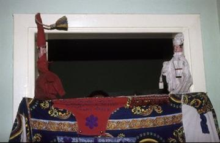

Home / River Valleys and First Cities / Africa: Nile and the Horn
Encyclopedia ID 695
Egyptian backgammon
Also known as Tawla · Tawla zahr · Mahbousa · Shesh Besh
Dice-driven race game of bearing off all checkers; the locked-piece variant mahbousa is the best-known Arab form.
Heritage note
Part of the living heritage of Egypt.
Origins
Usually placed in the era of River Valleys and First Cities (about 3000 to 1000 BCE), although its exact origins are uncertain, within the cultural world of Africa: Nile and the Horn.
Play it
Sources
Related entries
Senet
Egypt · Board and table gamesTavëll
Albania +1 · Board and table gamesNardi
Armenia +3 · Board and table gamesColombian Parqués
Colombia · Board and table gamesTavli
Cyprus +1 · Board and table gamesDon't Get Angry
Germany · Board and table games
More from Egypt

Aragoz Hand-Puppet Booth
Egypt · Performance and storytelling
Egyptian Fractions and Doubling
Egypt · Puzzles and mind games
Khayamiya Tentmaker Applique
Egypt · Crafts and making
Nile Felucca Sailing
Egypt · Racing
Nubian house painting
Egypt · Crafts and making
Tahtib
Egypt · Dances